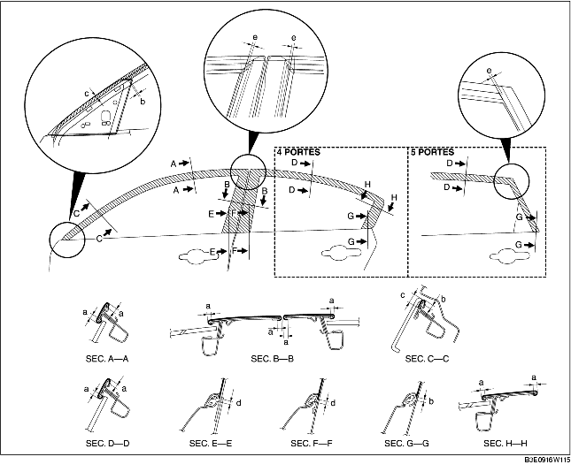

1. Enlever toute trace de graisse ou de saleté de la surface d'adhérence de la portière.
2. Découper toutes les portions inutilisées le long des lignes pointillées.
3. Décoller le papier de soutien et attacher le film de la ceinture de portière sur la portière, comme indiqué dans l'illustration.

4. Décoller le film protecteur transparent situé sur le film de la ceinture de portière.